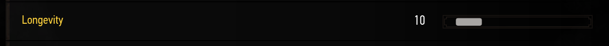

Everything you need to know about RERback to summary
RER contracts are mini contracts like you would see in vanilla. Of course they are not as detailed and you should not expect the exact same features as the RER contracts are randomly generated.
Contracts consists of small pre-built phases that are composed to make a full quest. The length of the contract is decided by the number of phases that are played. And the number of phases can be controlled by the longevity slider  All phases have different longevity costs, phases where you simply asked to follow a trail, or where Geralt talks a bit cost less than phases where you will fight. What you need to know is that one longevity point equals around 1 minute and 30 seconds of gameplay.
Contracts can appear naturally during gameplay based on the frequencies set without doing anything, or you can interact with any noticeboard in the game and if there is still room for it a random notice will be added. These notices are all signed by A. Letoth so you can recognise vanilla notices from RER's.
Once you've done that, the mod will wait for you to leave the settlement or
move away from the noticeboard. Then it will wait a bit longer and based on
the path you walked, will finally start the contract.
It uses the path you walked so you can decide where the contract will
take place. It's useful if there is an area you don't like.
You will know when the contract started because a camera scene
is played and Geralt will talk too.
From there, just let yourself be guided by the map markers and the trails you see on the ground. You will know when a contract is over when Geralt says the line It's over
You can now go back to a noticeboard and start a new one if you want.